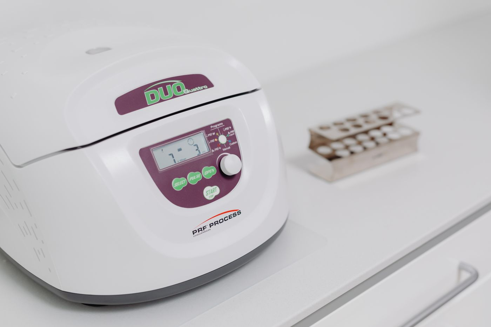

LAB EQUIPMENT일반 실험 장비
원심분리기 · 교반·혼합 장비
회전 속도, 용량과 사용 목적을 확인합니다.

실제 취급 모델과 공급 가능 여부는 문의 후 확인됩니다.

LAB EQUIPMENT원심분리기 · 교반·혼합 장비
회전 속도, 용량과 사용 목적을 확인합니다.
OBSERVATION현미경 · 관찰 장비
배율과 관찰 대상, 설치 환경을 검토합니다.
 LIQUID HANDLING
LIQUID HANDLING피펫 · 팁 · 튜브
사용 용량과 소모품 호환성을 확인합니다.
 REAGENTS
REAGENTS연구용 시약 · 실험 재료
규격, 용도와 공급 조건을 확인합니다.
 CONSUMABLES
CONSUMABLES용기 · 샘플링 · 연구소모품
반복 사용하는 품목의 수량을 정리합니다.
국내외 기자재 · 품목 검토
모델명과 사양을 바탕으로 공급 여부를 확인합니다.
사용 목적, 필요한 성능과 희망 납기를 정리해 주세요.
모델명·규격·수량을 함께 확인하면 견적 준비가 수월해집니다.
비티랩은 이화학기기, 과학기자재, 시약과 연구소모품을 다루는 기업입니다. 필요한 제품의 규격부터 공급 조건까지, 연구 목적에 맞는 구매를 위한 정보를 안내합니다.
과학기자재 · 시약 · 컴퓨터 및 주변기기 · 무역
환경·학술 연구개발 관련 사업
품목명·모델·필요 수량·희망 일정을 준비해 주세요.
취급 가능 여부와 공급 조건은 확인 후 안내합니다.
고객 상담용 연락처는 회사 확인 후 공개할 예정입니다.
아래는 제공 자료에 기재된 세금계산서 수신 이메일입니다.
품목명, 제조사 또는 모델명, 규격, 수량과 희망 납기입니다. 모델을 모르는 경우 사용 목적과 필요한 사양을 정리해 주세요.
사진은 취급 분야를 설명하는 참고 이미지입니다. 실제 판매 모델, 재고, 가격과 제조사 공급 가능 여부는 별도 확인이 필요합니다.
품목과 수량, 배송 지역 등을 확인한 뒤 안내하는 항목입니다. 이 검토본에서는 주문이나 결제가 이루어지지 않습니다.